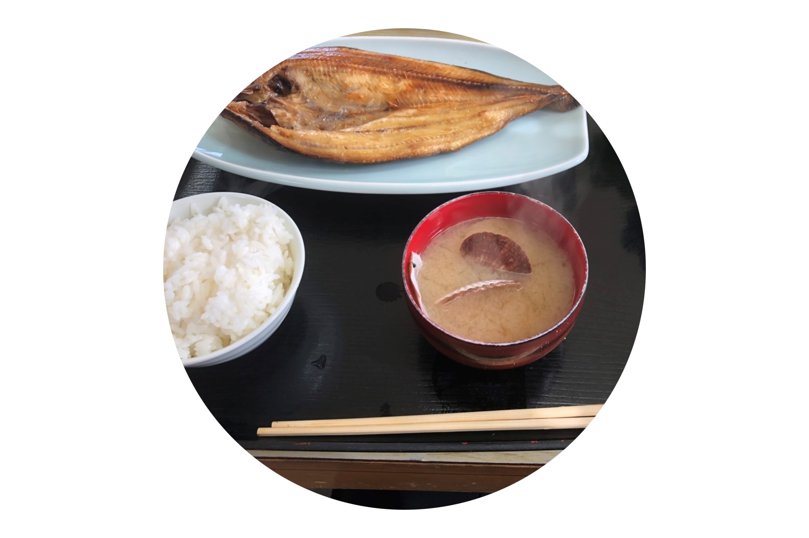
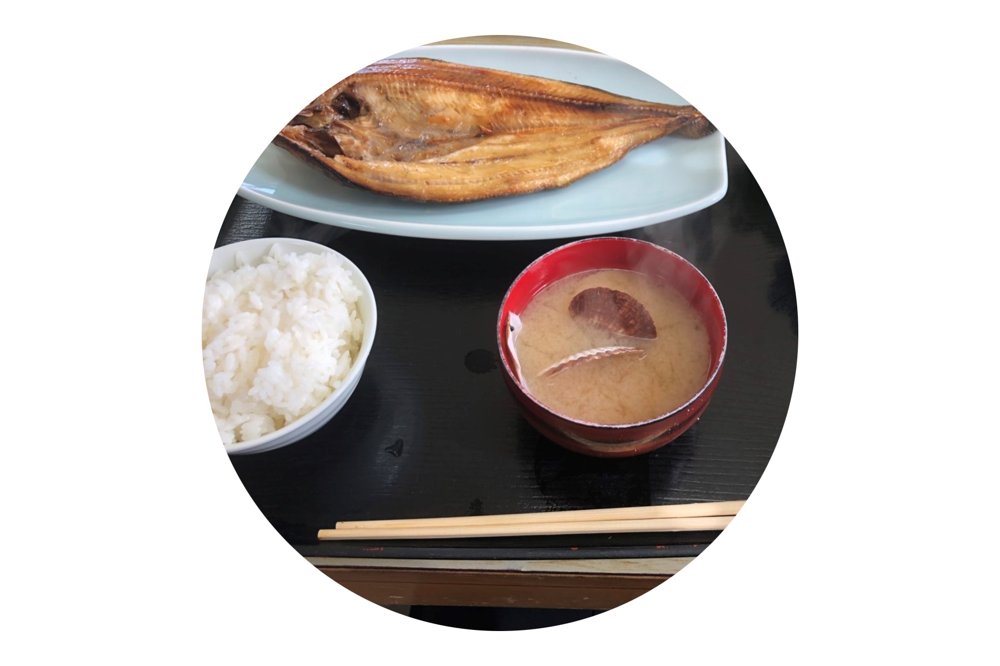

S U P E R S T I T I O N
Beliefs or superstitions are things which we live with. Some protect us from harm, and others represent customs and the religious beliefs. We compare the differences between Thailand and Japan.

Beliefs or superstitions are things which we live with. Some protect us from harm, and others represent customs and the religious beliefs. We compare the differences between Thailand and Japan.

In both countries, if a crow cries, people will not be happy. Crows are said to predict the death of people. And Thai people believe that an owl is theangel of death. If it flies to someone's house, a person living there will die.
.png)
.png)
For Japanese people when a black cat crosses the path, it becomes unlucky because black is said to be a symbol of death. Most Thais believe that red is an auspicious color, but red is forbidden at funerals.
Japanese people believe if you hiccup 100 times, you will die. Children are scared and try to stop their hiccups. Thai people believe that you will start to hiccup due to lack of water, and to stop you should drink plenty of water.
 

In Japan, if you leave rice on your plate, it is saidthat your eyes will be squashed and you will lose your sight. That is because rice used to have the same value as money in the past. Thai people believe that the knocking on therice bowl while eating rice invites the spirits to eat together with us.
In Japan, the pronunciation of 9 and 4 are the same as thosew for pain and death. The numbers 7 and 8 are considered as lucky numbers and are close to the Gods. Thai people believe that 8, 9 numbers are goodto bring luck. The numbers 7 and 4 are bad numbers because the number 4 has the same pronunuciation as the word death in Chinese.
:PAWANACHAI SEERVESANG
KAN
COMPUTER ENGINEERING RMUTT/THAILAND
TAKASHI SHION
TAKASHI
INFORMATIONMEDIA TECHNOLOGY HIU/JAPAN
KIATTISAK KONGRAK
CAPTAIN
MULTIMEDIA TECHNOLOGY RMUTT/THAILAND
NAOYA MORI
MORRY
INFORMATIONMEDIA TECHNOLOGY HIU/JAPAN